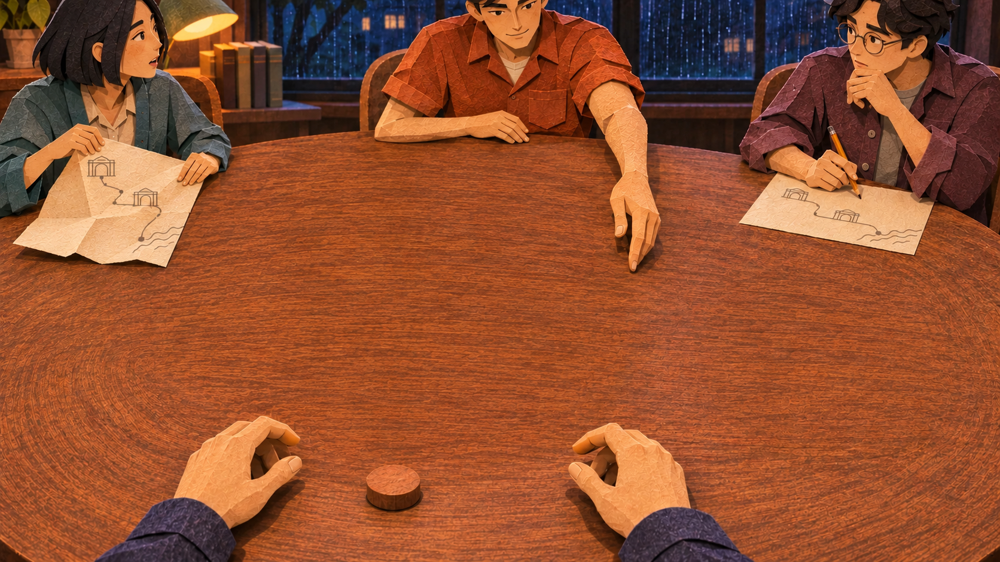
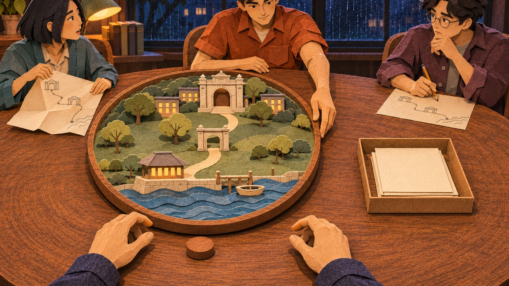

Review only. No production adoption or runtime changes.
All three candidates are 1672 × 941. Each removes the round model platter and the paper-slips tray while retaining the small wooden token. The generator retextured preserved areas: none is an exact unchanged-pixel inpaint.

